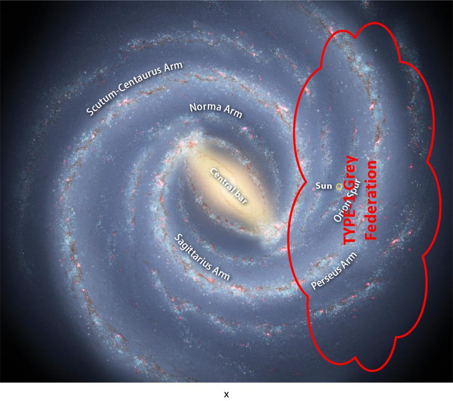

I have presented the PDF titled “Alien Interview” to the readership. It is supposed to be the transcripts of the interview that a nurse had with an extraterrestrial entity that was recovered from a spaceship crash in Roswell, New Mexico. There is a lot of good stuff there, and a lot of things that run counter to what I know and understand to be true. My intention here is to parse the entire book, and compare it to what I know. Where the two diverge, it will be up to you (the readership) to sort it out.
This is part 2.
You can view part 1 HERE.
SUBJECT: ALIEN INTERVIEW, 25. 7. 1947, 1st Session
“Before you can understand the subject of history, you must first understand the subject of time. Time is simply an arbitrary measurement of the motion of objects through space.
No problem with this.
Space is not linear. Space is determined by the point of view of an IS-BE when viewing a object. The distance between an IS-BE and the object being viewed is called “space”.
No problem with this.
Objects, or energy masses, in space do not necessarily move in a linear fashion. In this universe, objects tend to move randomly or in a curving or cyclical pattern, or as determined by agreed upon rules.
No problem with this.
History is not only a linear record of events, as many authors of Earth history books imply, because it is not a string that can be stretched out and marked like a measuring tool. History is a subjective observation of the movement of objects through space, recorded from the point of view of a survivor, rather than of those who succumbed.
No problem with this.
Events occur interactively and concurrently, just as the biological body has a heart that pumps blood, while the lungs provide oxygen to the cells, which reproduce, using energy from the sun and chemicals from plants, at the same time as the liver strains toxic wastes from the blood, and eliminates them through the bladder and the bowels.
All of these interactions are concurrent and simultaneous. Although time runs consecutively, events do not happen in an independent, linear stream. In order to view and understand the history or reality of the past, one must view all events as part of an interactive whole. Time can also be sensed as a vibration which is uniform throughout the entire physical universe.
No problem with this.
Airl explained that IS-BEs have been around since before the beginning of the universe. The reason they are called “immortal”, is because a “spirit” is not born and cannot die, but exists in a personally postulated perception of “is – will be”. She was careful to explain that every spirit is not the same. Each is completely unique in identity, power, awareness and ability.
No problem with this.
The difference between an IS-BE like Airl and most of the IS-BEs inhabiting bodies on Earth, is that Airl can enter and depart from her “doll” at will. She can perceive at selective depths through matter. Airl and other officers of The Domain can communicate telepathically. Since an IS-BE is not a physical universe entity it has no location in space or time. An IS-BE is literally, “immaterial”.
No problem with this.
They can span great distances of space instantly.
No problem with this.
They can experience sensations, more intensely than a biological body, without the use of physical sensory mechanisms. An IS-BE can exclude pain from their perception. Airl can also remember her “identity”, so to speak, all the way back into the dim mists of time, for trillions of years!
No problem with this.
She says that the existing collection of suns in this immediate vicinity of the universe have been burning for the last 200 trillion years. The age of the physical universe is nearly infinitely old, but probably at least four quadrillion years since its earliest beginnings.
Not true. You can calculate the age of a star based upon how long it takes to burn. A star is like this big tureen of fuel, that is on fire. The fire will burn and burn until all the fuel is gone. There is a relationship between the mass of the star, the size of the star, and it's longevity. The oldest stars in our Milky Way galaxy are 13.4 billion years, give or take 800 million years. This is somewhat close to what the age of the Universe is (which hovers around 13.7 billion years). Personally, I believe that this paragraph is an error in understanding by the translator. All the statements leading up to this point discussed consciousness+. And then suddenly "out of the blue" comes this discussion about physical stars. It is totally and completely out of place, and out of context to the thought stream. Thus, I believe that the translator miss-translated it. My best guess is that the extraterrestrial was trying to continue on this statement... "Airl can also remember her "identity", so to speak, all the way back into the dim mists of time, for trillions of years!" In which case the proper translation should have been... "She says that the existing collection of consciousness+ in this (particular) immediate vicinity of the universe have been in existence for the last 200 trillion years." It far out-dates the physical universe. Which is something that I agree with.
Time is a difficult factor to measure as it depends on the subjective memory of IS-BEs and there has been no uniform record of events throughout the physical universe since it began.
No problem with this.
As on Earth, there are many different time measurement systems, defined by various cultures, which use cycles of motion, and points of origin to establish age and duration.
No problem with this.
The physical universe itself is formed from the convergence and amalgamation of many other individual universes, each one of which were created by an IS-BE or group of IS-BEs.
No problem with this. A universe is created as a tool by a consciousness, or a group of consciousnesses.
The collision of these illusory universes commingled and coalesced and were solidified to form a mutually created universe.
No problem with this.
Because it is agreed that energy and forms can be created, but not destroyed, this creative process has continued to form an ever-expanding universe of nearly infinite physical proportions.
No problem with this.
Before the formation of the physical universe there was a vast period during which universes were not solid, but wholly illusionary. You might say that the universe was a universe of magical illusions which were made to appear and vanish at the will of the magician.
No problem with this. There was a point in time where the only thing that existed was thoughts and consciousnesses. Then over time, the consciousnesses began to construct physical realities as tools to obtain experiences within, and thus further their individual growth.
In every case, the “magician” was one or more IS-BEs. Many IS-BEs on Earth can still recall vague images from that period. Tales of magic, sorcery and enchantment, fairy tales and mythology speak of such things, although in very crude terms.
No problem with this.
Each IS-BE entered into the physical universe when they lost their own, “home” universe. That is, when an IS-BE’s “home” universe was overwhelmed by the physical universe, or when the IS-BE joined with other IS-BEs to create or conquer the physical universe.
This understanding differs from mine. But only slightly. I was always under the impression that a physical universe (bubble) was a stable and constant thing. This extraterrestrial says that once the consciousness+ leaves that physical universe that it ceases to exist. As I see it, a "soul" anchors itself in the original physical universe, then creates a consciousness+ that migrates from that universe to another one to obtain experiences in. Since the consciousness+ and the soul are still connected by quantum entanglement, both physical universes exist simultaneously.
On Earth, the ability to determine when an IS-BE entered the physical universe is difficult for two reasons:
- the memory of IS-BEs on Earth have been erased, and
- IS-BEs arrival or invasion into the physical universe took place at different times, some 60 trillion years ago, and others only 3 trillion. Every once in a short while, a few million years, an area or planet will be taken over by another group of IS-BEs entering into the area.
At this point, the extraterrestrial is discussing the injection of consciousness+ into the bodies of creatures in the Earth sphere of influence. What we can gather from this discussion is that... [1] Entry point for consciousness+ injection into physical bodies in and around the Earth is difficult to determine both geographically, and by date and time. [2] Consciousness+ injections in this region came in waves from different points and from different locations in geographical location and in time.
Sometimes they will capture other IS-BEs as slaves. They will be forced to inhabit bodies to perform menial, or manual work – especially mining mineral ores on heavy-gravity planets, such as Earth.
No problem with this. I work about this is a similar vein regarding "farming sentience's".
Airl says that she has been a member of The Domain Expeditionary Force for more than 625 million years, when she became a pilot for a biological survey mission which included occasional visits to Earth. She can remember her entire career there, and for a very long time before that.
No problem with this. For a non-corporal being the enormous spans of time involved are given and expected.
She told me that Earth scientists do not have an accurate measuring system to gauge the age of matter. They assume that because certain types of materials seem to deteriorate rather quickly, such as organic or carbon-based matter, that there is a deterioration of matter. It is not accurate to measure the age of stone, based on the measurement of the age of wood or bone.
No problem with this. In all of this, I see a fundamental difference in dating things from the point of view of a non-corporal entity, and that of cycling biological creatures.
This is a fundamental error. Factually, matter does not deteriorate. It cannot be destroyed. Matter may be altered in form, but it is never truly destroyed.
No problem with this. Einstein E=mc2.
The Domain has conducted a periodic survey of the galaxies in this sector of the universe since it developed space travel technologies about 80 trillion years ago.
Actually it should be written as: "The Domain has conducted periodic surveys of this sector of the universe. It has done so ever since it first developed space travel technologies."
A review of changes in the complexion of Earth reveal that mountain ranges rise and fall, continents change location, the poles of the planet shift, ice caps come and go, oceans appear and disappear, rivers, valleys and canyons change. In all cases, the matter is the same. It is always the same sand.
Every form and substance is made of the same basic material, which never deteriorates.
I have no problem with this.
“Airl described the abilities of an IS-BE officer of The Domain to me, and she demonstrated one to me when she contacted – telepathically – a communications officer of The Domain who is stationed in the asteroid belt.
No problem.
The asteroid belt is composed of thousands of broken up pieces of a planet that once existed between Mars and Jupiter. It serves as a good low-gravity jumping off point for incoming space craft traveling toward the center of our galaxy.
No problem. Sure the asteroid belt is a region of the "frost line" in our solar system, and rocky planets are not stable there. They tend to break up.
She requested that this officer consult information stored in the “files” of The Domain, concerning the history of Earth. She asked the communications officer to “feed” this information to Airl. The communications officer immediately complied with the request. Based on the information stored in the files of The Domain, Airl was able to give me a brief overview or “history lesson”.
No problem with this.
This is what Airl told me that The Domain had observed about the history of Earth:
She told me that The Domain Expeditionary Force first entered into the Milky Way galaxy very recently – only about 10,000 years ago.
This does not match my understanding. As I understand things, the type-1 greys have been around for much longer than that. And as far as Earth goes, they have been around for at least 30,000 years. From the human point of view, there has been observations and contacts with space vehicles, and their crews for all of human history. Whether or not they are Type-1 greys, members of the "Old Empire", or something else is unknown.
Their first action was to conquer the home planets of the “Old Empire” (this is not the official name, but a nick-name given to the conquered civilization by The Domain Forces) that served as the seat of central government for this galaxy, and other adjoining regions of space.
As I interpret this, the extraterrestrial is saying that they are from outside of the Milky Way Galaxy. When they entered our galaxy, the first thing that they needed to do was conquer the ruling "federation" or national communities on this side of the galaxy first. That this "federation" was the seat of the central government of our galaxy, and nearby regions of space. This idea of conquering a region of space, and becoming the ruler of that area is something that the military leadership in Roswell New Mexico would well understand. After all, they just finished a long war with the Nazi Germans and the Japanese. Yet, it makes no sense. These extraterrestrials are non-corporal creatures. They exist as waves and inhabit manufactured bodies as they desire. They do not need to "claim" any geographic region for any purpose. My "gut instinct" is that there is a very complicated and complex relationship of governance between different species, and the physical and non-physical realms. Whether this results in "space opera" type galactic battles or not is hard to say, but my guess, unlikely. At least "unlikely" as described by this entity in how it was depicted to the Roswell military leadership. I suspect other situations, truths and considerations were in play. And this entire detailed bit of narrative was just simply to evoke specific reactions from the military leadership. To me, it appears that the extraterrestrial wanted to make some strong points apparent to the Roswell Military members... [1] It is an officer of a large and powerful military empire. [2] This military empire is so powerful that it completely broke and took over the massive galactic empire that ruled this section of space.
These planets are located in the stars systems in the tail of the Big Dipper constellation. She did not mention which stars, exactly.
"Within Ursa Major the stars of the Big Dipper have Bayer designations in consecutive Greek alphabetical order from the bowl to the handle.
| Proper Name |
Bayer Designation |
Apparent Magnitude |
Distance (L Yrs) |
| Dubhe | α UMa | 1.8 | 124 |
| Merak | β UMa | 2.4 | 79 |
| Phecda | γ UMa | 2.4 | 84 |
| Megrez | δ UMa | 3.3 | 81 |
| Alioth | ε UMa | 1.8 | 81 |
| Mizar | ζ UMa | 2.1 | 78 |
| Alkaid | η UMa | 1.9 | 101 |
Near Mizar is a star called Alcorr and together they are informally known as the Horse and Rider. At magnitude 4.1, Alcor would normally be relatively easy to see with the unaided eye, but its proximity to Mizar renders it more difficult to resolve, and it has served as a traditional test of sight. In the 17th century, Mizar itself was discovered to be a binary star system — the first telescopic binary found. The component stars are known as Mizar A and Mizar B. In 1889, Mizar A was discovered to in fact be a binary as well, the first spectroscopic binary discovered, and with the subsequent discovery that Mizar B itself is also a binary, in total Mizar currently is known to be at least a quadruple star system."
About 1,500 years later The Domain began the installation bases for their own forces along the path of invasion which leads toward the center of this galaxy and beyond.
Based on what is being stated, I made up this simple drawing of our physical galaxy; The Milky Way. On it, I located the solar system, and the purported movement of the invasion forces.
If this is the true case, and what he said is correct, then the dominance of the galaxy by his "federation" would look something like this...

About 8,200 years ago The Domain forces set up a base on Earth in the Himalaya Mountains near the border of modern Pakistan and Afghanistan. This was a base for a battalion of The Domain Expeditionary Force, which included about 3,000 members.
So this base would be inside of China in the Tibet (XiZang) autonomous region.
They set up a base under or inside the top of a mountain. The mountain top was drilled into and made hollow to create an area large enough to house the ships and personnel of that force. An electronic illusion of the mountain top was then created to hide the base by projecting a false image from inside the mountain against a “force screen”.
The ships could then enter and exit through the force screen, yet remain unseen by homo sapiens.
This is standard, well known, Type-1 grey technology.
Shortly after they settled there the base was surprised by an attack from a remnant of the military forces of the “Old Empire”. Unbeknownst to The Domain, a hidden, underground base on Mars, operated by the “Old Empire”, had existed for a very long time. The Domain base was wiped out by a military attack from the Mars base and the IS-BEs of The Domain Expeditionary Force were captured.
You can imagine that The Domain was very upset about losing such a large force of officers and crew, so they sent other crews to Earth to look for them. Those crews were also attacked.
This is most certainly an interesting story. But whether or not it is true is something else entirely. On one hand, the story does nothing aside from provide background information on a battle between two groups of opposing forces, and establishes a narrative in support of the reasoning behind the presence of Type-1 greys in this section of the galaxy. On the other hand, it could be a delicious fiction that would be accepted and acknowledged by the Roswell military leadership at the base at that time.
The captured IS-BEs from The Domain Forces were handled in the same fashion as all other IS-BEs who have been sent to Earth. They were each given amnesia, had their memories replaced with false pictures and hypnotic commands and sent to Earth to inhabit biological bodies. They are still a part of the human population today.
Here we see that the "Old Empire" has constructed systems (in this region of Earth) to interrupt the the ability of consciousness+ to easily migrate in and out of world-lines, and an established life-line.
After a very persistent and extensive investigation into the loss of their crews, The Domain discovered that “Old Empire” has been operating a very extensive, and very carefully hidden, base of operations in this part of the galaxy for millions of years.
No one knows exactly how long.
Eventually, the space craft of the “Old Empire” forces and The Domain engaged each other in open combat in the space of the solar system.
No problem with this. If the story about this war is true, this is the logical conclusion that you can expect.
According to Airl, there was a running battle between the “Old Empire” forces and The Domain until about 1235 AD, when The Domain forces finally destroyed the last of the space craft of the “Old Empire” force in this area. The Domain Expeditionary Force lost many of its own ships in this area during that time also.
About 1,000 years later the “Old Empire” base was discovered by accident in the spring of 1914 AD.
The dates and all of the matters regarding "time" are suspect as they do not make any sense. 1235AD + 1000 = 2235AD. Not 1914AD.
The discovery was made when the body of the Archduke of Austria, was “taken over” by an officer of The Domain Expeditionary Force. This officer, who was stationed in the asteroid belt, was sent to Earth on a routine mission to gather reconnaissance.
The extraterrestrial goes into some detail how a non-corporal entity can take over the body of a physical person. I am quite sure that this astounded, and "blew the minds" of the military leadership at the Roswell base.
The purpose of this “take over” was to use the body as a “disguise” through which to infiltrate human society in order to gather information about current events on Earth. The officer, as an IS-BE, having greater power than the being inhabiting the body of the Archduke, simply “pushed” the being out and took over control of the body.
No problem with this. Though it might have scared the living Dejesus out of the Roswell leadership at that time.
However, this officer did not realize how much the Hapsburgs were hated by feuding factions in the country, so he was caught off guard when the body of the Archduke was assassinated by a Bosnian student. The officer, or IS-BE, was suddenly “knocked out” of the body when it was shot by the assassin. Disoriented, the IS-BE inadvertently penetrated one of the “amnesia force screens” and was captured.
And that is how this species learned about the "electronic force field" that prevents wave form data transfer, consciousness+ movement, and all other associated elements. "Franz Ferdinand (December 18, 1863 - June 28, 1914) was an Archduke of Austria-Este, Prince Imperial of Austria and Prince Royal of Hungary and Bohemia, and from 1896 until his death, heir presumptive to the Austro-Hungarian throne. His assassination in Sarajevo precipitated the Austrian declaration of war. This caused countries allied with Austria-Hungary (the Central Powers) and countries allied with Serbia (the Entente Powers) to declare war on each other, starting World War I. In 1889, Franz Ferdinand's life changed dramatically. His cousin Crown Prince Rudolf committed suicide at his hunting lodge in Mayerling, leaving Franz Ferdinand's father, Archduke Karl Ludwig, as first in line to the throne. However his father renounced his succession rights a few days after the Crown Prince's death. Henceforth, Franz Ferdinand was groomed to succeed. On June 28, 1914, at approximately 11:15 am, Franz Ferdinand and his wife were killed in Sarajevo, the capital of the Austro-Hungarian province of Bosnia and Herzegovina, by Gavrilo Princip, a member of Young Bosnia and one of several (a few) assassins organized by The Black Hand (UpHa pyKa/Tsrna Ruka). The event, known as the Assassination in Sarajevo, triggered World War I. Franz and Sophie had previously been attacked when a bomb was thrown at their car. It missed them, but many civilians were injured. Franz and Sophie both insisted on going to see all those injured at the hospital. As a result of this, Princip saw them and shot Sophie in the abdomen. Franz was shot in the jugular and was still alive when witnesses arrived to his aid, but it was too late; he died within minutes. The assassinations, along with the arms race, nationalism, imperialism, militarism, and the alliance system all contributed to the beginning of World War I, which began less than two months after Franz Ferdinand's death, with Austria-Hungary's declaration of war against Serbia."
Eventually The Domain discovered that a wide area of space is monitored by an “electronic force field” which controls all of the IS-BEs in this end of the galaxy, including Earth. The electronic force screen is designed to detect IS-BEs and prevent them from leaving the area.
Using the prison analogy, you can liken it to walls, barbed wire, and search lights.
If any IS-BE attempts to penetrate the force screen, it “captures” them in a kind of “electronic net”. The result is that the captured IS-BE is subjected to a very severe “brainwashing” treatment which erases the memory of the IS-BE.
No problem with this.
This process uses a tremendous electrical shock, just like Earth psychiatrists use “electric shock therapy” to erase the memory and personality of a “patient” and to make them more “cooperative”.
"The story of electric shock began in 1938, when Italian psychiatrist Ugo Cerletti visited a Rome slaughterhouse to see what could be learned from the method that was employed to butcher hogs. In Cerletti's own words, "As soon as the hogs were clamped by the [electric] tongs, they fell unconscious, stiffened, then after a few seconds they were shaken by convulsions.... During this period of unconsciousness (epileptic coma), the butcher stabbed and bled the animals without difficulty
"At this point I felt we could venture to experiment on man, and I instructed my assistants to be on the alert for the selection of a suitable subject."
Cerletti's first victim was provided by the local police - a man described by Cerletti as "lucid and well-oriented." After surviving the first blast without losing consciousness, the victim overheard Cerletti discussing a second application with a higher voltage. He begged Cerletti, "Non una seconda! Mortifierel" ("Not another one! It will kill me!")
Ignoring the objections of his assistants, Cerletti increased the voltage and duration and fired again. With the "successful" electrically induced convulsion of his victim, Ugo Cerletti brought about the application of hog-slaughtering skills to humans, creating one of the most brutal techniques of psychiatry.
'Electric shock is also called electro-convulsive "therapy" or treatment (ECT), electroshock therapy or electric shock treatment (EST), electrostimulation, and electrolytic therapy (ELT). All are euphemistic terms for the same process: sending a searing blast of electricity through the brain in order to alter behavior."
(Reference: http://www.sntp.net/ect/ect3.htm)
Today Electroshock therapy (ECT) is most often used as a treatment for severe major depression which has not responded to other treatment, and is also used in the treatment of mania, catatonia, schizophrenia and other disorders. It first gained widespread use as a form of treatment in the 1940s and 50s. Today, an estimated 1 million people worldwide receive ECT every year, usually in a course of 6-12 treatments administered 2 or 3 times a week.
Electroconvulsive therapy has "side-effects" which include confusion and memory loss for events around the time period of treatment. ECT have been shown to cause persistent memory loss. It is the effects of ECT on long-term memory that give rise to much of the concern surrounding its use. The acute effects of ECT include amnesia.
Registered nurse Barbara C. Cody reports in a letter to the Washington Post that her life "was forever changed by 13 outpatient ECTs I received in 1983. Shock 'therapy' totally and permanently disabled me. "EEGs [electroencephalograms] verify the extensive damage shock did to my brain. Fifteen to 20 years of my life were simply erased; only small bits and pieces have returned. I was also left with short-term memory impairment and serious cognitive deficits. "Shock 'therapy' took my past, my college education, my musical abilities, even the knowledge that my children were, in fact, my children."
Ernest Hemingway, American author, committed suicide shortly after Electric Shock treatment at the Menninger Clinic in 1961. He is reported to have said to his biographer, "Well, what is the sense of ruining my head and erasing my memory, which is my capital, and putting me out of business? It was a brilliant cure but we lost the patient...."
On Earth this “therapy” uses only a few hundred volts of electricity. However, the electrical voltage used by the “Old Empire” operation against IS-BEs is on the order of magnitude of billions of volts!
"The general public may consider household mains circuits (100-250 V AC), which carry the highest voltages they normally encounter, to be high voltage. For example, an installer of heating, ventilation and air conditioning equipment may be licensed to install 24 Volt control circuits, but may not be permitted to connect the 240 volt power circuits of the equipment. Voltages over approximately 50 volts can usually cause dangerous amounts of current to flow through a human being touching two points of a circuit. Voltages of greater than 50 V are capable of producing heart fibrillation if they produce electric currents in body tissues which happen to pass through the chest area. The electrocution danger is mostly determined by the low conductivity of dry human skin. If skin is wet, or if there are wounds, or if the voltage is applied to electrodes which penetrate the skin, then even voltage sources below 40 V can be lethal if contacted."
This tremendous shock completely wipes out all the memory of the IS-BE. The memory erasure is not just for one life or one body. It wipes out the all of the accumulated experiences of a nearly infinite past, as well as the identity of the IS-BE!
I wrote about this before. This is how you take subjects, and "farm them", and then capture their experiences. Then erase and then send them back to relive the experiences.
The shock is intended to make it impossible for the IS-BE to remember who they are, where they came from, their knowledge or skills, their memory of the past, and ability to function as a spiritual entity. They are overwhelmed into becoming a mindless, robotic nonentity.
No problem with this.
After the shock a series of post hypnotic suggestions are used to install false memories, and a false time orientation in each IS-BE.
"The ability of a human to be induced into a form of behavior or thinking pattern after coming out of the hypnotic state. Post hypnotic suggestions are administered by the hypnotist and may optionally include a time scope. An altered sense of perception or behavioral pattern may be "programmed" into the person under hypnosis. Certain sequences of events may be set as triggers to enter or exit the post-hypnotic pattern. The behavior patterns resemble conditioned reflexes, though administered without classical behavior alteration techniques. Examples: Any number, color, object, etc. may be induced to be ignored by the patient after full consciousness. A certain keyword starts the suggestion and a different word ends it. The patient will not know nor use the item to be ignored. He/she may state that the sea is colored red, if suggested to ignore the color blue. A count of eleven may be achieved if asked to count ones fingers if a number -say 5- is suggested to be ignored. Thus the patient counts 1-2-3-4-6-7-8-9-10-11 Different type of behavior patterns may be induced such as forcing the patient to recite a certain sentence whenever anyone says out loud the special keyword. The patient is fully aware of the conditioned action but it is very difficult, if not impossible, to restrain from doing it. Sweating, loss of coordination and full lack of concentration plagues the patient until he/she performs the programmed action. An object may be set to be perceived as invisible and it will be fully ignored and evaded during the period of suggestion. Experiments may be performed with a coffee mug, induced to be invisible. If the mug is put on top of a page with writing, the patient will only read the parts not covered by the mug. Even though the sentences may make no sense, nothing is seemingly wrong to the suspected. It is difficult to suggest an object be invisible, yet stay tactile. Usually the object is completely ignored by all senses. Thus, the mug in the example will reportedly not exist, even when the patient is touching it. Stage hypnotists will sometimes perform shows in which they hypnotize participants to think they are some celebrity and behave exactly like them. John Mohl, stage hypnotist and member of The National Guild of Hypnotists, says that he has often hypnotized people to become someone else! Mohl noticed that adults often became a celebrity while Middle or High School students usually become something much more creative or imaginative." What I find most interesting about this is that this concept of "brain washing" and suggestion to control others was NEW information provided to the Roswell military leadership in 1947. From it, was spawned Monarch programming. I can clearly see a straight line military development from this interrogation, to the Monarch mind control program. And since I do, it lends credibility to this entire disclosure.
This includes the command to “return” to the base after the body dies, so that the same kind of shock and hypnosis can be done again, and again, again – forever. The hypnotic command also tells the “patient” to forget to remember.
No problem with this.
What The Domain learned from the experience of this officer is that the “Old Empire” has been using Earth as a “prison planet” for a very long time – exactly how long is unknown – perhaps millions of years.
This is not what I understand. I think that "Prison Planet" is much too strong a term. I prefer the term "sentience nursery". Aside from a completely different connotation, it helps us to understand that this area is a place for growth and development. While the idea of a "prison planet" is one of isolation and punishment. It is very important that the reader understand the difference, between these two, and the relationship and role that thy have here in this life that they are living. While it might be true that this earth once might have been a "prison plant", today it is in the process of being reformed, and the Type-1 greys are working with other entities to make sure that this happens. In fact, I am 100% convinced that the Earth being a "sentience nursery" is the recovery effort initiated by the Type-1 greys to rehabilitate the human species and get them out from under this horrible "electromagnetic force field". Which is why the Mantids are involved in dealing on a person-to-person, consciousness-to-consciousness basis.
So, when the body of the IS-BE dies they depart from the body. They are detected by the “force screen”, they are captured and “ordered” by hypnotic command to “return to the light“.
No problem with this.
The idea of “heaven” and the “afterlife” are part of the hypnotic suggestion – a part of the treachery that makes the whole mechanism work.
(Read “The Invisible College – War in Heaven – A Completely New And Revolutionary Conception of The Nature of Spiritual Reality”).
After the IS-BE has been shocked and hypnotized to erase the memory of the life just lived, the IS-BE is immediately “commanded”, hypnotically, to “report” back to Earth, as though they were on a secret mission, to inhabit a new body. Each IS-BE is told that they have a special purpose for being on Earth. But, of course there is no purpose for being in a prison – at least not for the prisoner.
No problem with this.
Any undesirable IS-BEs who are sentenced to Earth were classified as “untouchable” by the “Old Empire”.
"In the Indian caste system, a Dalit, often called an untouchable, or an outcaste, is a person who according to traditional Hindu belief does not have any 'varnas". Varna refers to the Hindu belief that most humans were supposedly created from different parts of the body of the divinity Purusha. The part from which a varna was supposedly created defines a person's social status with regard to issues such as whom they may marry and which professions they may hold. Dalits fall outside the varnas system and have historically been prevented from doing any but the most menial jobs. (However, a distinction must be made between lower-caste people and Pariahs.) Included are leather-workers (called chamar), carcass handlers (called mahar), poor farmers and landless labourers, night soil scavengers (called bhangi or chura), street handicrafters, folk artists, street cleaners, dhobi, etc. Traditionally, they were treated as pariahs in South Asian society and isolated in their own communities, to the point that even their shadows were avoided by the upper castes. Discrimination against Dalits still exists in rural areas in the private sphere, in ritual matters such as access to eating places and water sources. It has largely disappeared, however, in urban areas and in the public sphere, in rights of movement and access to schools. The earliest rejection of discrimination, at least in spiritual matters, was made as far back as the Bhagavada Gita, which says that no person, no matter what, is barred from enlightenment There are an estimated 160 million Dalits in India." Reference: Wikipedia.org "Human rights abuses against these people, known as Dalits, are legion. A random sampling of headlines in mainstream Indian newspapers tells their story: "Dalit boy beaten to death for plucking flowers"; "Dalit tortured by cops for three days"; "Dalit 'witch' paraded naked in Bihar"; "Dalit killed in lock-up at Kurnool"; '7 Dalits burnt alive in caste clash"; "5 Dalits lynched in Haryana"; "Dalit woman gang-raped, paraded naked"; "Police egged on mob to lynch Dalits". "Dalits are not allowed to drink from the same wells, attend the same temples, wear shoes in the presence of an upper caste, or drink from the same cups in tea stalls," said Smita Narula, a senior researcher with Human Rights Watch, and author of Broken People: Caste Violence Against India's "Untouchables." Human Rights Watch is a worldwide activist organization based in New York. India's Untouchables are relegated to the lowest jobs, and live in constant fear of being publicly humiliated, paraded naked, beaten, and raped with impunity by upper-caste Hindus seeking to keep them in their place. Merely walking through an upper-caste neighborhood is a life-threatening offense. Nearly 90 percent of all the poor Indians and 95 percent of all the illiterate Indians are Dalits." Reference: http://news.nationalgeographic.com/news/2003/06/0602_030602_untouchables.html
This included anyone that the “Old Empire” judged to be criminals who are too vicious to be reformed or subdued, as well as other criminals such as sexual perverts, or beings unwilling to do any productive work.
No problem with this.
An “untouchable” classification of IS-BEs also includes a wide variety of “political prisoners”.
"A political prisoner is someone held in prison or otherwise detained, perhaps under house arrest, for his/her involvement in political activity. political prisoners are arrested and tried with a veneer of legality, where false criminal charges, manufactured evidence, and unfair trials are used to disguise the fact that an individual is a political prisoner. This is common in situations which may otherwise be decried nationally and internationally as a human rights violation and suppression of a political dissident. A political prisoner can also be someone that has been denied bail unfairly, denied parole when it would reasonably have been given to a prisoner charged with a comparable crime, or special powers may be invoked by the judiciary. Particularly in this latter situation, whether an individual is regarded as a political prisoner may depend upon subjective political perspective or interpretation of the evidence. Governments typically reject assertions that they hold political prisoners. Examples: In the Soviet Union, dubious psychiatric diagnoses were sometimes used to confine political prisoners. In Nazi Germany, "Night and Fog"prisoners were among the first victims of fascist repression. In North Korea, entire families are jailed if one family member is suspected of anti-government sentiments." -- Reference: Wikipedia.org
This includes IS-BEs who are considered to be noncompliant “free thinkers” or “revolutionaries” who make trouble for the governments of the various planets of the “Old Empire”. Of course, anyone with a previous military record against the “Old Empire” is also shipped off to Earth.
No problem with this.
A list of “untouchables” include artists, painters, singers, musicians, writers, actors, and performers of every kind. For this reason Earth has more artists per capita than any other planet in the “Old Empire”.
No problem with this.
“Untouchables” also include intellectuals, inventors and geniuses in almost every field. Since everything the “Old Empire” considers valuable has long since been invented or created over the last few trillion years, they have no further use for such beings. This includes skilled managers also, which are not needed in a society of obedient, robotic citizens.
No problem with this.
Anyone who is not willing or able to submit to mindless economic, political and religious servitude as a tax-paying worker in the class system of the “Old Empire” are “untouchable” and sentenced to receive memory wipe-out and permanent imprisonment on Earth.
Is it just me? But it just seems like the United States is trying to replicate The "Old Empire".
The net result is that an IS-BE is unable to escape because they can’t remember who they are, where they came from, where they are. They have been hypnotized to think they are someone, something, sometime, and somewhere other than were they really are.
No problem with this.
The Domain officer who was “assassinated” while in the body of Archduke of Austria was, likewise, captured by the “Old Empire” force. Because this particular officer was a high powered IS-BE, compared to most, he was taken away to a secret “Old Empire” base under the surface of the planet Mars. They put him into a special electronic prison cell and held him there.
No problem with this.
Fortunately, this Domain officer was able to escape from the underground base after 27 years in captivity. When he escaped from the “Old Empire” base, he returned immediately to his own base in the asteroid belt.
No problem with this.
His commanding officer ordered that a battle cruiser be dispatched to the coordinates of the base, provided by this officer, and to destroy that base completely.
No problem with this.
This “Old Empire” base was located a few hundred miles north of the equator on Mars in the Cydonia region.
(The following internet links shows maps of a complex of artificial looking structures which some people have referred to a the "Pyramid Complex, The Face on Mars, and other geological features that are strikingly similar to symbols and architecture found in Mesoamerican and Egyptian pyramid civilizations. Notice how the "pyramids and face structures look as though they have been partially destroyed! Had there been an "Old Empire" base at this location, which was destroyed by a cruiser attack from The Domain Force, it base would have been significantly damaged.) http://www.greatdreams.com/cydonia.htm http://www.qtm.net/~geibdan/cydonia.html "In addition, a team of scientists from the United States Geological Survey reported at the recent annual Lunar and Planetary Science Conference in Houston, Texas, that images taken by NASA s Mars-orbiting spacecraft Mars Odyssey show what appear to be cave entrances where primitive life forms - "past or present microbial life" - could have been sheltered, and where water could exist in liquid form. A more detailed perusal of the report reveals that the spacecraft actually photographed, in both visual and infrared, puzzling dark circular structures associated with these caves -structures ranging in size from 100 to 250 meters (330 to 825 feet). Picking up the hardly-noticed story in its June 2007 issue, the prestigious journal Scientific American has now provided additional information: Seven such "football size" caverns were identified; they are 425 feet deep. "
Although the military base of the “Old Empire” was destroyed, unfortunately, much of the vast machinery of the IS-BE force screens, the electroshock / amnesia / hypnosis machinery continues to function in other undiscovered locations right up to the present moment. The main base or control center for this “mind control prison” operation has never been found. So, the influences of this base, or bases, are still in effect.
No problem with this.
The Domain has observed that since the “Old Empire” space forces were destroyed there is no one left to actively prevent other planetary systems from bringing their own “untouchable” IS-BEs to Earth from all over this galaxy, and from other galaxies nearby.
Therefore, Earth has become a universal dumping ground for this entire region of space.
Well, maybe, but who really knows?
This, in part, explains the very unusual mix of races, cultures, languages, moral codes, religious and political influences among the IS-BE population on Earth. The number and variety of heterogeneous societies on Earth are extremely unusual on a normal planet. Most “Sun Type 12, Class 7” planets are inhabited by only one humanoid body type or race, if any.
No problem with this.
In addition, most of the ancient civilizations of Earth, and many of the events of Earth have been heavily influenced by the hidden, hypnotic operation of the “Old Empire” base. So far, no one has figured out exactly where and how this operation is run, or by whom because it is so heavily protected by screens and traps.
No problem with this.
Furthermore, there has been no operation undertaken to seek out, discover and destroy the vast and ancient network of electronics machinery that create the IS-BE force screens at this end of the galaxy.
No problem with this.
Until this has been done, we are not able to prevent or interrupt the electric shock operation, hypnosis and remote thought control of the “Old Empire” prison planet.
No problem with this.
Of course all of the crew members of The Domain Expeditionary Force now remain aware of this phenomena at all times while operating in this solar system space so as to prevent detection and the capture by “Old Empire” traps.”
End of part 2
There are miss-translations on time, confusions in regard to galaxies and universes, and a mish-mash of confusion between consciousness+, humans, and some confusion regarding galactic “ownership” and “power projection” between different species.
The more I parse it in detail, the clearer to me that this is exactly what it is claimed to be.
Key Points
Never the less, I believe the following to be true in regards to this parsing of this section of the book…
- Most of what was stated was factually accurate… provided that the war between the “Dominion” and the “Old Empire” is correct. But this has never been a key knowledge base for my role, and thus I know nothing at all about it.
- The information about “time” is also correct. It is wholly misunderstood by most humans.
- Since the 1980’s MAJestic has taken a major role in working with this species and <redacted>, <redacted> and the Mantids towards the maintenance and development of this “Prison Planet” into a “Sentience Nursery”.
- The Roswell leadership should be able to understand and relate to the military aspects of the narrative.
- The aspects regarding consciousness+ movement would probably simply terrify the Roswell leadership, and confuse them. But they are really actually very accurate.
- So far, in parsing this document, I see no reason to describe it as a fictional work. It appears to be exactly what it said it is.
- Apparently the writings about “Mind Control” ended up spawning American covert effort in the Monarch Program.
- There is no reason for the Type-1 grey extraterrestrial to lie. None.
- The information provided had / has a purpose. It appears that the background information is truthful, but tailored to the limitations of the target audience, and worded to appeal to their understandings.
And finally…
- Because MAJestic was established, and my role involved strong interaction with this species, and you all in MM land can see the content and the direction of my articles, it should be obvious that [1] MAJestic believed what the extraterrestrial said, and [2] my role is part of this reconstruction effort.
Part three
You can visit part three HERE.